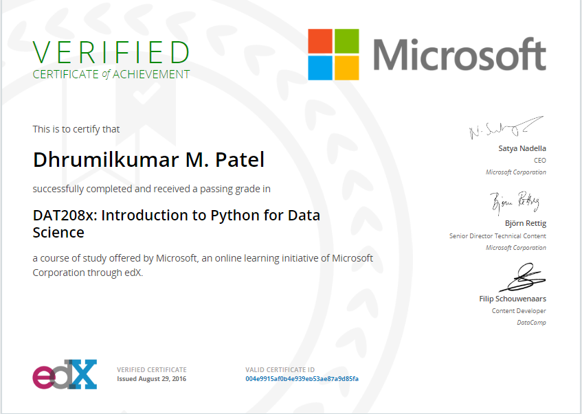
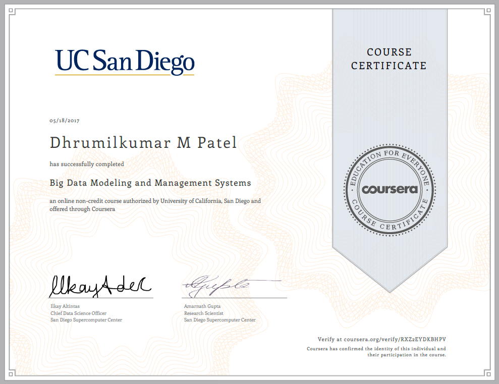
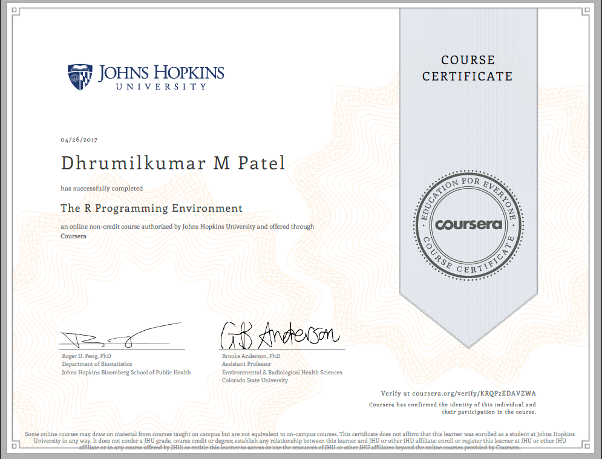
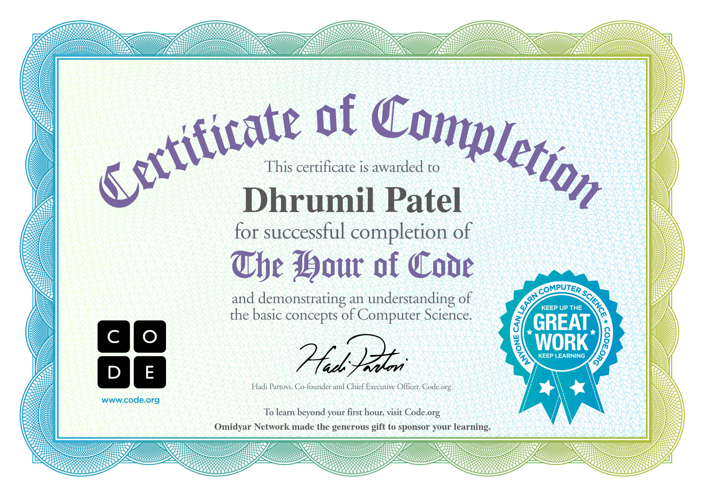
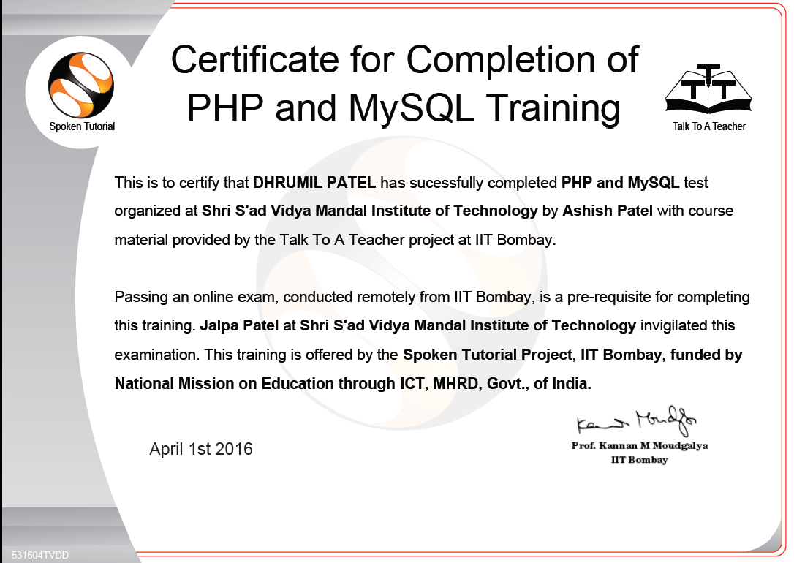

Currently pursuing, Bachelor of Engineering in Computer Science. Attentive to Artificial Intelligence, Machine learning, Neural Networks, Cloud Computing, IoT & Wireless sensor networks but major focus is on
In God we trust. All others must bring data.
– W. Edwards Deming
Gujarat Technological University
4 Years Course
CGPA* - 8.29
CPI - 7.89 (6 Semesters)
BVBs Narmada Vidyalaya
2 Years Course
Indian Institute of Technology, Bombay
Mumbai, India.
Bharuch Municipality
Bharuch,Gujarat
Recent Research in Wireless Sensor Networks: A Trend Analysis
Abstract
Corresponding author(s)
Dr. Rutvij H. Jhaveri
Prerak S. Shah
Dhrumil M. Patel
Neel N. Patel
Devanshi P. Patel
Conference - ICT4SD 2016
Goa, INDIA.
1. Technical event Conquest 2k15,
2. VISAKA - An initiative by MHRD, Government of India to identify some households and trained them regarding the various digital financial modes available to them.
The mission is to ensure that as far as possible, digital modes of financial transactions are used by all because, This is the best bet to block generation of black-money in future.
1. Ethical hacking seminar by Mr. Hiren Bhuva (Sky Technovation, Surat, India) at Technical event Conquest 2k15.
2. Startup Fair Winter 2015 by iCreate(and VentureStudio) at IET Ahemdabad.
3. Advanced Fiber Optic Communication by Mr. A.K.Patel (RTTC, BSNL, Ahmedabad) at SVMIT.
4. GUJCOST sponsored ONE DAY NATIONAL SYMPOSIUM on "Internet of Things" by Dept. of Computer engg. (in association with dept of sci and Techno Gov. of Gujrat), at G H Patel college of engineering, VVN.
5. Workshop on IoT by TOPS Technology at SVMIT.
6. Workshop on PHP by Mr. Bhavin Rana, Director of [dot]NETExpert Web solution at SVMIT.
This Industrial visit was organized by Depatment of Computer and IT Engineering, SVMIT, Bharuch at RTTC, BSNL, Ahmedabad, Where we procured important information on TeleCommunication, which incorporates Optical fiber communication, GSM,
1. Blood Donation camp organized by Rotary Club Bharuch at SVMIT College Campus.
2. Blood Donation camp organized by HDFC Bank Ltd. & MKICS College Bharuch at MKICS Seminar hall.
'Smart India Hackathon 2017' is a pan India 36 hour nonstop digital programming competition. The participating teams will simultaneously compete from across 33 locations in India to offer digital yet sustainable innovative solutions to solve real time challenges faced by the nation. It will harness the creativity of millions of bright young minds.
Achievements till date,
A. One of Total 18 Short-listed candidates from SVM Institute of technology.
B. Team Leader of team 'Smart Kachrawalas'
C. Sortlisted for the Grand Finale. Appearing at Shri Krihna College of Technology, Coimbatore for Hackathon 2017
D. Secured position in TOP 10 among total 60 teams.
IT for SOLID WASTE MANAGEMENT
Greenovation is a competiton organised by Gujatat Technological University along with GTU Innovation Council at Sankul level. (Bharuch / Ankleshwar Sankul)
Competition was hosted by Shroff S R Rotary Institute of Chemical Technology, Vataria, India on 23thFEBRUARY 2017.
I along with Prerak Shah and Neel Patel secured 1st position in domain IT for Solid Waste Management.
A project and design fair organized by SVMIT, Bharuch.
There were total 4 categories,
1. Design Demo (Pre-final Year)
2. Design Idea (Pre-final Year)
3. Project Demo (Final Year)
4. Project Idea (Final Year)
I along with Prerak & Neel, won the 1st prize in Design Demo category.
A competition organised by Depatment of CSE & IT, SVMIT, Bharuch.
There were total 3 levels,
A. Hardware Assembling
B. Quiz
C. Rapid Fire
A competition organised by Depatment of CSE & IT, SVMIT, Bharuch.
There were total 2 rounds,
A. Design using HTML
B. Desing using HTML/CSS
A Non-Technical competition organised by Depatment of CSE & IT, SVMIT, Bharuch.
There were total 3 rounds, We've to perform several tasks in 1 minute & I, along with Yash Kantariya stood 1st in this competiton.
R Programming
Hadoop
3x3 Rubik's cube
Python for Data Science
Apache Spark
HTML/CSS/Bootstrap

MICROSOFT DAT208x | edX


Johns Hopkins University, Baltimore
Coursera (1/6)
6 course Specialization

Hour of code | Code.org

PHP / MySQL | IIT Bombay
© 2016-2017 Dhrumil Patel